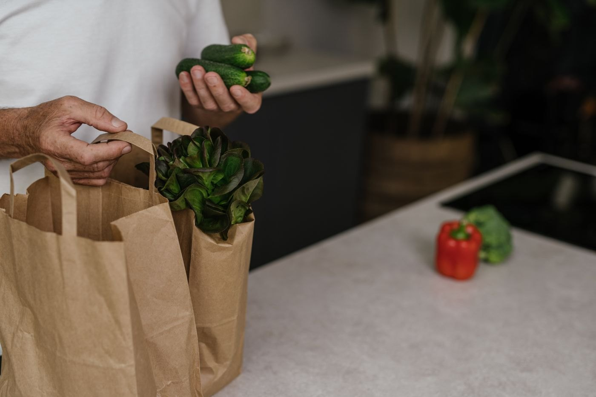

Find yours
Select products or a set nearby. Check the ingredients, expiration date and time of receipt.
Favorite products from shops, cafes and bakeries nearby - with discounts of up to 70%. For your budget and our planet.
Find something tasty
Good products at a good price. Hurry up to pick it up today.
Three small steps
to big changes.
Select products or a set nearby. Check the ingredients, expiration date and time of receipt.
Add your finds to your cart. Choose pickup or available delivery.
Receive your order at the specified time. Good food gets on the table and gets its chance.
We’re creating LowS Market to connect local shops with those who appreciate great food and smart shopping. Foods with a short shelf life can still become someone’s favorite dinner.
Good for you.
Good for the planet.
Every product saved matters.
List products, find new customers and reduce write-offs.
Some of the products can be donated to those who need support now.
Food is nearing its expiration date, or the store has more food left than it can sell. The seller reduces the price so that the products find a buyer on time. The storage period and conditions are indicated in the card.
You choose a regular product based on its exact description. In a mystery bundle, the composition depends on the remains of the store. The card indicates the category, minimum regular price and possible allergens. If there are strict dietary restrictions, choose products with a known composition.
Open “My Orders“, select the order and click “Report Quality“. In the prototype, the request will be saved on your device. After the service is launched, such requests will be considered by the support team.
This is a training prototype. Stores, availability and prices are demonstration. Reservations and requests are saved only in your browser, money is not debited, and the data is not sent anywhere.